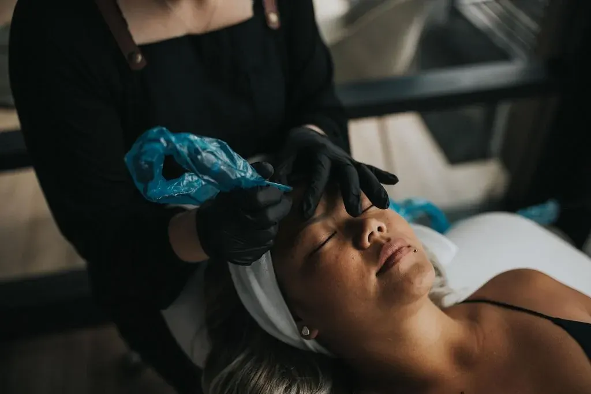
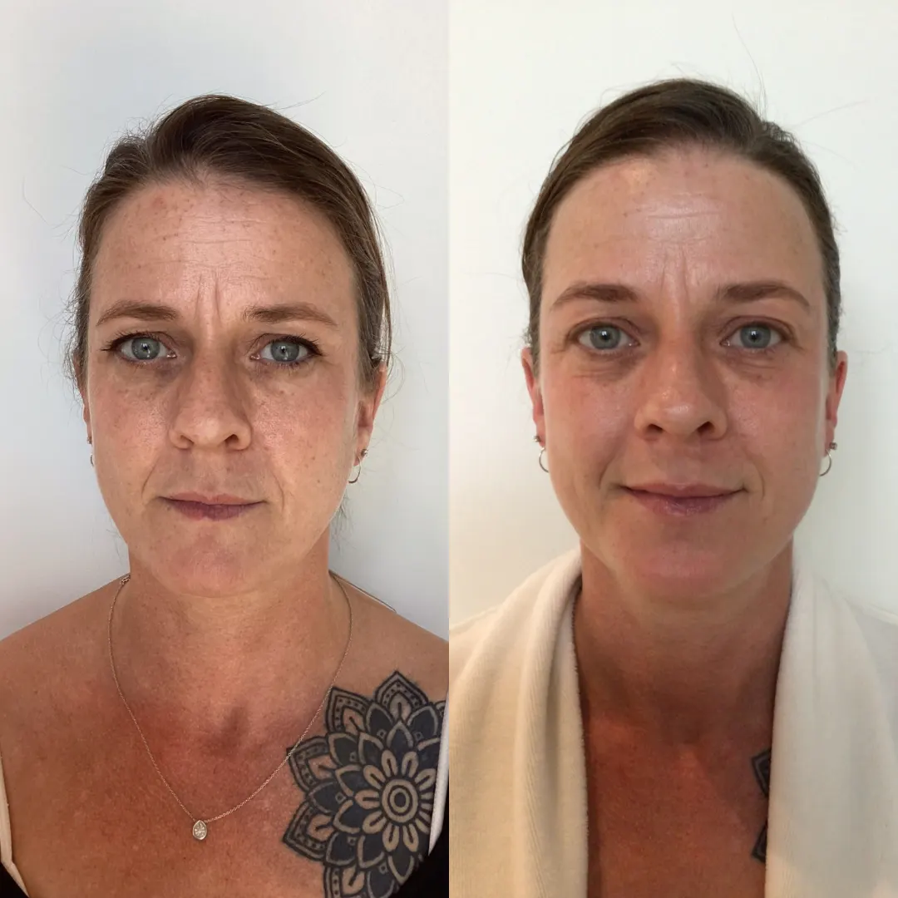
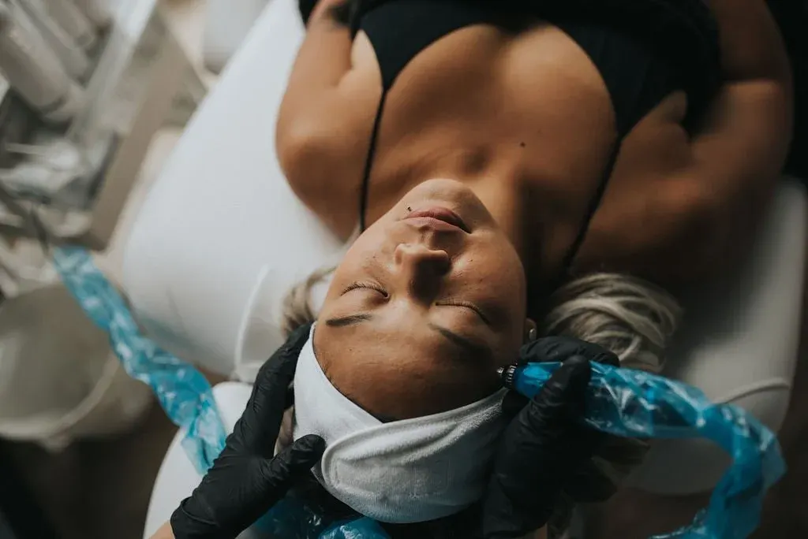
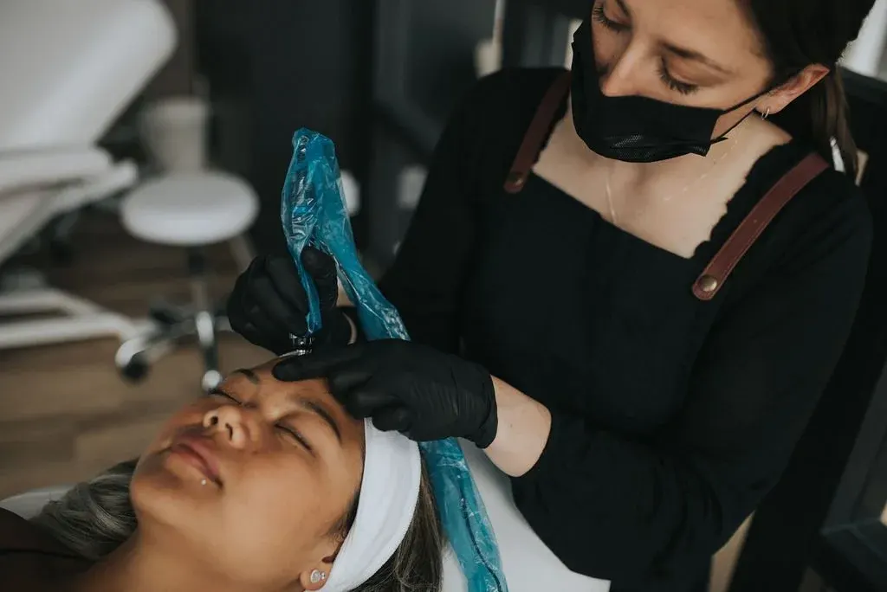

Acne
Acne Dry / Dehydrated
Dry / Dehydrated Dull
Dull Fine Lines & Aging
Fine Lines & AgingExpert Practitioners
Our team consists of highly trained and experienced professionals who are passionate about skin health and committed to delivering outstanding results.

We Are the Microneedling Specialists in Calgary!
At Face Skin & Body Bar, we offer expert microneedling treatments designed to revitalize your skin and address a wide array of skin concerns. Our signature collagen induction therapy is a highly effective, minimally invasive procedure that harnesses your body's natural healing capabilities to restore a healthy, youthful glow. If you're seeking improved skin texture, diminished imperfections, and overall skin rejuvenation, our expert team is here to guide you.
Microneedling, also known as collagen induction therapy, is a cutting-edge cosmetic procedure that involves the precise stamping of the skin with tiny, sterile needles. While the idea of needles on the skin might sound intimidating, the process is carefully controlled and surprisingly well-tolerated. These micro-injuries are superficial and trigger your body's innate healing response. In response to these controlled micro-traumas, your skin initiates a powerful cascade of regeneration, leading to a significant increase in the production of two vital proteins: Elastin and collagen.
Collagen and elastin are the foundational building blocks of healthy, youthful skin. As we age, the natural production of these proteins declines, leading to common skin concerns like sagging, wrinkles, and loss of firmness. By stimulating new collagen production, microneedling treatments effectively reverse these signs of aging, encouraging the skin to become firmer, smoother, and more resilient. This process not only repairs existing damage but also strengthens the skin's structure for long-term benefits.
The controlled micro-injuries created by the microneedling treatment also create microscopic channels in the skin. These channels serve a dual purpose: They facilitate enhanced absorption of topical serums and other active ingredients applied during and after the procedure. This allows these powerful ingredients to penetrate deeper into the skin, maximizing their efficacy and contributing to superior results.
Our microneedling treatments at Face Skin & Body Bar are a versatile solution for a multitude of skin concerns, offering comprehensive skin rejuvenation. This powerful collagen induction therapy can significantly improve the appearance of:
Microneedling is an appropriate and highly effective treatment for almost anyone in search of improved skin texture and a refreshed appearance. It is particularly beneficial for individuals experiencing:
During your initial consultation, our experienced practitioners will conduct a thorough assessment of your skin and discuss your specific skin concerns to determine if microneedling treatments are the most appropriate and effective pathway to your desired outcomes.

Your microneedling treatment at Face Skin & Body Bar is a meticulously planned and executed process, designed for your comfort and optimal results. Each session typically lasts approximately 1.5 hours and involves three key steps:
Your skin will be thoroughly cleansed to remove any makeup, oils, or impurities. A topical numbing cream will then be applied to the treatment area to ensure your comfort throughout the procedure. This cream typically takes 20-30 minutes to take effect.
Once your skin is adequately numbed, your practitioner will use a sterile, professional-grade microneedling device to create precise, controlled micro-channels in the targeted areas. We specifically utilize a stamping motion rather than a dragging or "gliding" technique. This method ensures even coverage and consistent depth, maximizing the therapeutic effect.
Stamping is the preferred method for microneedling because it allows for needles to penetrate the skin vertically and cleanly. Unlike older roller devices or improper gliding techniques, stamping minimizes the risk of tearing or scratching the skin, which can lead to increased trauma, unnecessary discomfort, and potentially less predictable results. This precise, perpendicular insertion creates optimal micro-channels for enhanced collagen production and product absorption, ensuring a safer and more effective microneedling treatment.
Following the microneedling process, high-quality Hyaluronic Acid will be directly applied onto the open channels, followed by a soothing and deeply hydrating collagen mask. This mask not only calms the skin but also infuses it with beneficial ingredients. A gentle ice globe facial massage will then be performed to further soothe the skin, reduce redness, and enhance product absorption.
The average number of microneedling treatments recommended depends on the specific skin concerns being addressed and the desired level of improvement.
Your practitioner will recommend a personalized treatment plan during your consultation.
The discomfort level for a microneedling treatment is generally very low, rated at approximately 2/5. Thanks to the topical numbing cream applied beforehand, most clients report feeling only a light pressure or a mild vibrating sensation during the procedure. Any discomfort is typically fleeting and well-tolerated.
Membership Pricing
Smart Skin Plan$337.50
Smart Skin Plus$330
The Accelerated$318.75
Membership Pricing
Smart Skin Plan$427.50
Smart Skin Plus$418
The Accelerated$403.75
Membership Pricing
Smart Skin Plan$472.50
Smart Skin Plus$462
The Accelerated$446.25
The results of your microneedling treatment are not immediate, but are truly transformative as your skin undergoes its natural regenerative process. You can typically expect to see initial improvements around 4 weeks after your treatment, with continued and progressive enhancement over the next 3 months as new collagen production takes full effect. Your skin will appear smoother, firmer, more even-toned, and visibly rejuvenated.
Proper after care is crucial for optimizing your microneedling results and ensuring a smooth recovery. Your practitioner will provide detailed post-treatment instructions, which typically include:
The downtime following a microneedling treatment is generally minimal, ranging from 1 to 3 days.
The exact recovery timeline can vary based on individual skin sensitivity and the intensity of the treatment.

Witness the remarkable transformations achieved with our microneedling treatments. Our gallery showcases real client results, demonstrating the significant improvements in skin texture, reduction of fine lines, sun damage, fading of acne scars, and overall skin rejuvenation that our collagen induction therapy can deliver.

While microneedling is safe and effective for many, there are certain contraindications that may prevent you from undergoing the treatment. These include, but are not limited to:
A thorough medical history will be taken during your consultation to ensure your safety and suitability for microneedling treatments.
At Face Skin & Body Bar in Calgary, we are dedicated to providing exceptional skin care with a personalized approach. When you choose us for your microneedling treatment, you benefit from:
Our team consists of highly trained and experienced professionals who are passionate about skin health and committed to delivering outstanding results.
We utilize state-of-the-art microneedling devices and adhere to the highest standards of safety and hygiene.
We understand that every client's skin is unique. We develop customized microneedling treatment plans tailored to your specific skin concerns and aesthetic goals.
From your initial consultation to meticulous aftercare instructions, we provide continuous support and guidance throughout your skin rejuvenation journey.
Our ultimate goal is to help you achieve beautiful, healthy, and radiant skin that boosts your confidence.
"I've struggled with acne scars for years, and after a series of microneedling treatments at Face Skin & Body Bar, my skin is so much smoother and more even. I feel so much more confident!"
"I've been so impressed with my microneedling experience with Alexa. After two sessions, I can honestly say she's incredibly professional, but also has this amazing knack for making you feel completely relaxed and confident. The collagen mask and ice globes at the end of the treatment are such a luxurious touch and feel incredible on the skin. I've also been really happy with how quickly I've healed, with very little downtime. I'm already seeing noticeable improvements in my skin, and I'm genuinely looking forward to my next session with her. I highly recommend it."
"The fine lines around my eyes have dramatically improved after just a few sessions. The collagen induction therapy really works! The team at Face Skin & Body Bar is amazing."

Are you ready to transform your skin and experience the remarkable benefits of collagen induction therapy? Don't let skin concerns like fine lines, acne scars, or uneven texture hold you back from achieving the radiant complexion you’ve always dreamed of.
Contact the team at Face Skin & Body Bar in Calgary today to schedule your microneedling consultation. Our expert team looks forward to assessing your skin, discussing your goals, and crafting a personalized microneedling treatment plan to help you embark on your journey to beautiful, revitalized skin. Let us help you unveil a healthier, more confident you!